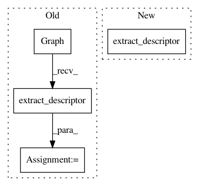

f4503bb3a3be014b452f54d8e2d187bb6419f627,tests/test_graph.py,,test_extract_descriptor_add,#,147
Before Change
def test_extract_descriptor_add():
model = get_add_skip_model()
descriptor = Graph(model).extract_descriptor()
assert descriptor.n_conv == 4
assert descriptor.n_dense == 2
assert descriptor.skip_connections == [(2, 3, NetworkDescriptor.ADD_CONNECT), (3, 4, NetworkDescriptor.ADD_CONNECT)]
After Change
def test_extract_descriptor_add():
descriptor = get_add_skip_model().extract_descriptor()
assert descriptor.n_conv == 5
assert descriptor.n_dense == 2
assert descriptor.skip_connections == [(2, 3, NetworkDescriptor.ADD_CONNECT), (3, 4, NetworkDescriptor.ADD_CONNECT)]
In pattern: SUPERPATTERN
Frequency: 4
Non-data size: 4
Instances
Project Name: keras-team/autokeras
Commit Name: f4503bb3a3be014b452f54d8e2d187bb6419f627
Time: 2018-08-01
Author: jhfjhfj1@gmail.com
File Name: tests/test_graph.py
Class Name:
Method Name: test_extract_descriptor_add
Project Name: keras-team/autokeras
Commit Name: f4503bb3a3be014b452f54d8e2d187bb6419f627
Time: 2018-08-01
Author: jhfjhfj1@gmail.com
File Name: tests/test_graph.py
Class Name:
Method Name: test_extract_descriptor_concat